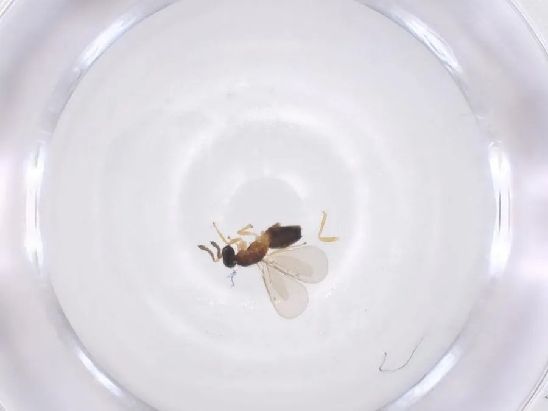

昆虫 · 动物界
周氏啮小蜂 Chouioia cunea

体长仅一至二毫米的微小寄生蜂，专产卵于美国白蛾等蛾类的蛹内，是中国大面积释放的生物防治天敌。
- 分类
- 门节肢动物门纲昆虫纲目膜翅目科姬小蜂科属周氏啮小蜂属
- 栖息环境
- 城市绿地、防护林、果园等美国白蛾发生区
- 地理分布
- 中国北方多地，随放蜂防治扩散至华北、东北和华东
- 保护级别
- 天敌昆虫，人工繁育释放，无保护需求
物种志
周氏啮小蜂的成虫体长约一至二毫米，通体黑褐色并带金属光泽，触角呈膝状，翅透明而翅脉退化。雌蜂腹部末端有细长的产卵针，能刺穿蛾蛹的壳把卵产进蛹体。一个美国白蛾的蛹里常能育出几十头小蜂，蜂体大小随寄主大小而变化。雄蜂较少，多在寄主附近等待雌蜂羽化，交配后很快死亡。
它由中国昆虫学家发现并描述，属名以昆虫学家周尧命名，自然分布于中国北方，后被大量繁育用于防治美国白蛾。雌蜂靠气味寻找寄主蛹，产卵后幼虫在蛹内取食，老熟时在蛹壳内化蛹，羽化时咬破蛹壳钻出。由于它专一性强、不伤害其他昆虫，被广泛用于城市绿化和果园的放蜂防治，一次释放可覆盖较大面积，是生物防治的成功范例。
形态与习性
- 体长约一至二毫米，黑褐带金属光泽
- 寄主美国白蛾等蛾类的蛹
- 产卵产卵针刺入蛹壳，卵产于蛹体内
- 繁育量一个寄主蛹可育出数十头小蜂
- 用途生物防治，城市绿地和果园放蜂
- 命名属名以昆虫学家周尧命名
趣味知识
- 它小得像一粒灰尘，却能钻进美国白蛾的蛹里，把整只蛹变成自己的育儿室。
- 一个蛾蛹可以飞出几十头小蜂，这种以一换几十的方式让它成为高效的防治工具。
- 它只认蛾蛹，不叮人也不伤害别的昆虫，因此可以放心在城区释放。
生态关系
- 寄生 → 美国白蛾 寄生蜂防治美国白蛾